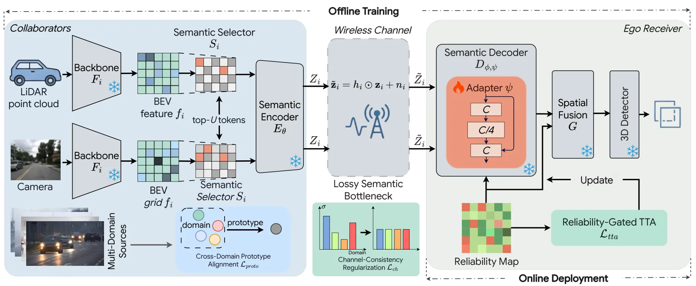
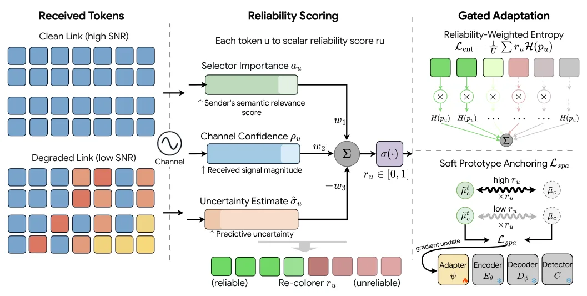
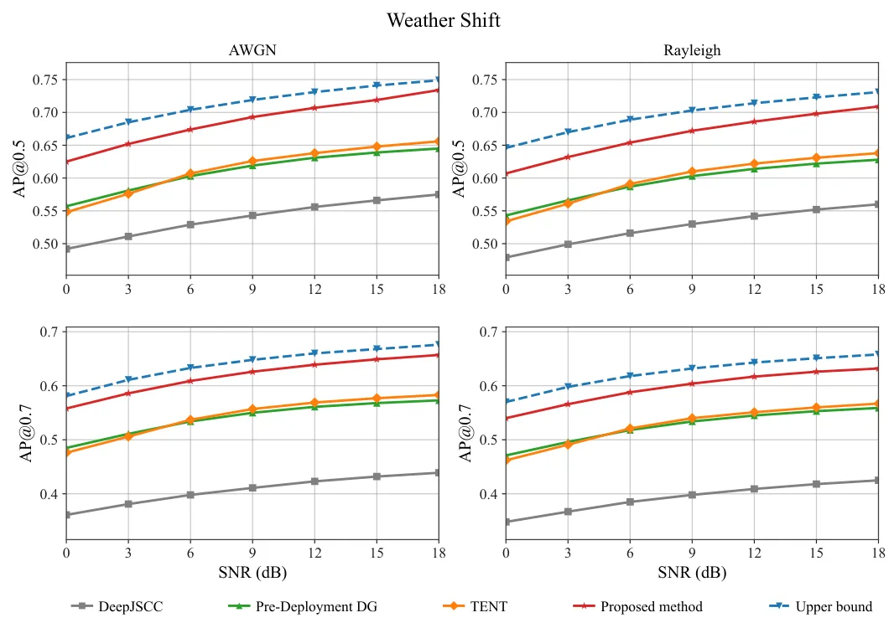
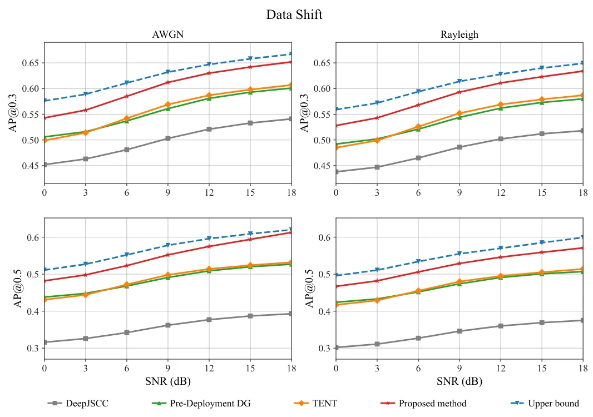
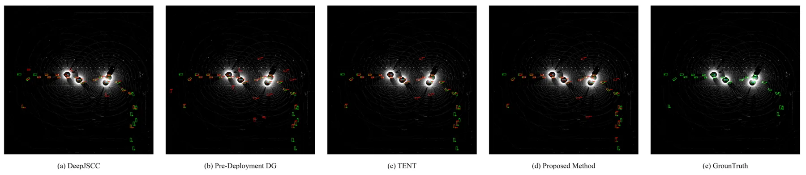
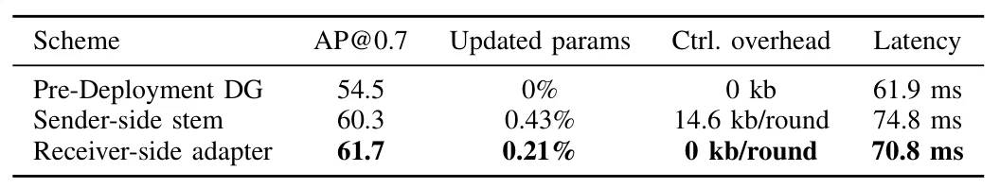
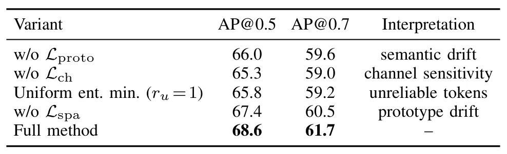
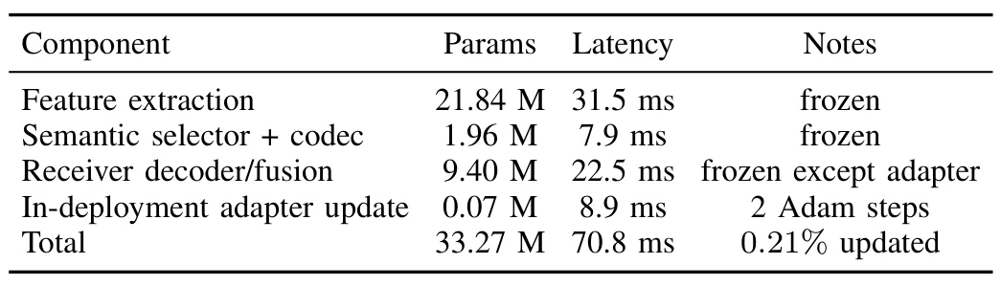

面向协同感知的域泛化自适应语义通信Domain-Generalized Adaptive Semantic Communication for Collaborative Perception
与多智能体协同感知及通信退化鲁棒性相关，可迁移到协同 SLAM，但论文评测核心不是位姿估计或地图一致性。
一句话工作总结
从通信可靠性和域偏移两侧联合保护 V2X 特征；虽不直接解决定位，但对多车协同建图/感知中的带宽受限特征共享有借鉴意义。
摘要
提出 RSTA，用于同时存在观测域偏移和未见无线信道条件的 source-free V2X 协同感知。部署前通过跨域原型对齐与跨信道梯度一致性训练语义编码器，部署时仅更新轻量 decoder adapter，并以语义相关性和信道可靠性联合门控熵最小化。论文报告在未见 Rayleigh fading 下，跨天气和跨数据集任务相对部署前域泛化分别提升 7.2 和 5.5 AP@0.7，在线仅更新 0.21% 参数。
We propose RSTA, a domain-generalized semantic communication framework enabling source-free V2X collaborative perception under both observation-domain shift and unseen wireless channel conditions. In V2X, received semantic tokens suffer coupled degradation from pre-transmission domain drift and in-transit channel corruption; existing methods address only one source, leaving adaptation misled by tokens that are simultaneously off-domain and physically degraded. RSTA trains a pre-deployment semantic encoder for transmission stability via cross-domain prototype alignment and cross-channel gradient consistency, and updates a lightweight in-deployment decoder adapter through reliability-gated entropy minimization that restricts gradients to tokens ranked high in both semantic relevance and channel fidelity. A theoretical task robustness decomposition links each loss term to a distinct degradation source, grounding each algorithmic component in a measurable error mode. Trained on AWGN and tested on unseen Rayleigh fading, RSTA achieves +7.2 AP@0.7 over pre-deployment domain generalization on cross-weather tasks and +5.5 on cross-dataset tasks across four V2X benchmarks, updating only 0.21\% of parameters in-deployment with zero inter-agent synchronization overhead.
中文解读摘录
- 原题：Sensor Deployment Optimization for Passive TDOA Localization Under Unknown Drift Distribution
- 作者：Zhenxing Zhang, Tianxian Zhang, Zerui Zhang, Zicheng Wang, Xueting Li
- 推荐评分：8.2/10
- 核心方法：仅使用漂移误差的一二阶统计量构造广义
GDOP_D，分析传感器位置漂移对几何精度分布的重塑，并用 adaptive unidirectional PSO 求解区域最坏情形部署。 - 为何值得看：与 GNSS 站网、UWB/声学 TDOA 的鲁棒几何设计和误差传播直接相关；应进一步核查推导假设、漂移相关性和实测验证。
图表/页面预览
{kind=link}

{kind=link}

{kind=link}

{kind=link}

{kind=link}

{kind=link}

{kind=link}

{kind=link}
